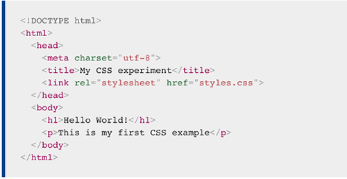
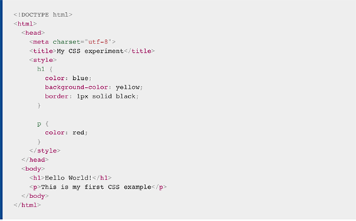
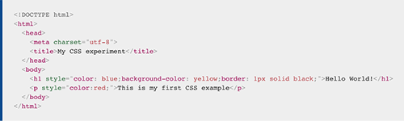
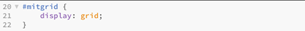

CSS
CSS er forkortelse for Cascading Style Sheets
Hvis HTML er struktur for et website, så er CSS dens udseende.
CSS er et layout sprog. CSS bruges til at definere layoutet på HTML-sider. Det er måden man håndterer udseendet på en website
CSS består af en masse forskellige egenskaber, som at bestemme skrifttyper, tekst, størrelse, farver, kanter, højder, baggrundsfarve, baggrundsbilleder osv...
CSS-koder er bygget op sådan, at du udvælger det stykke HTML, du vil style, og herefter bruger de såkaldte “Tuborg-klammer”, som ser sådan her ud {}
Inden for “klammerne” vælger man så, om det er farven, teksttypen eller placeringen, man gerne vil ændre. Et stykke CSS-kode, hvor du ændrer farven på en h1-overskrift til rød, ser for eks. sådan her ud:
Man kan evt. lave en separat CSS-fil der kaldes et Stylesheet, som linkes til alle ens HTML dokumenter. Derved kan du ændre f.eks. tekststørrelsen eller baggrundsbilleder centralt i CSS-filen, dermed ændre den samtidige HTML-dokumenter på hele hjemmesiden.
Du kan også skrive CSS direkte i HTML-dokumentet, hvis du ønsker at style et specifikt HTML-element på en specifik side. Det kaldes “in-line styling”
 Så har vi noget, som hedder Eksternt stylesheet og det er denne metode, som bliver brugt allermest, ved at bruge denne metode kan man linke det samme CSS til flere HTML dokumenter. Det giver os muligheden at man kun ændre sin CSS et samlet sted, som gælder for alle ens HTML dokumenter.

- https://developer.mozilla.org/en-US/docs/Learn/CSS/First_steps/How_CSS_is_structured-
- intro til css.pdf
SYNTAKS
En CSS består af nogle regler, der læses af browseren og derefter anvendes på de tilsvarende elementer i ens dokument.
Der er tre dele:
SELECTOR:
class="bodytext"Selector er et HTML-tag, hvor en stilart anvendes. f.eks. h1 eller tabel osv.
PROPERTY:
Property er en type attribut for HTML-tag. Alle ens HTML-attributter konverteres til CSS-egenskaber. f.eks. farve, kant osv.
VALUE:
Value er værdier, der tildeles egenskaber. For eksempel kan farveegenskab have en værdi, der enten rød eller #f1f1f1 osv.
SELECTORS
Selectors er en måde at identificere eller udvælge, det man vil style i sit style sheet.
Der er tre primære selectors
Type/element selector:
De almindelige tags som: p, h1, body
Id selector:
• Id selector anvender man, når det er et helt specifikt element man gerne vil style. Man giver et id til et bestemt element " img id= “logo“ " og derefter bruger man hashtag i stylesheet #logo…
Class selector:
Class selector, bruger vi, når vi vil ramme flere elementer der skal styles ens
CSS - BOXMODEL
CSS-boxmodellen definerer, hvordan de forskellige dele af en box arbejder sammen for at skabe et felt, som vi kan se nedunder Modellen anvendes til alle block elementer i HTML.
Modellen består af 4 dele
CONTENT:
Området hvor indholdet ligger, eks. tekst eller grafik.
Ændres med width og height properties
PADDING:
Padding er det whitespace omkring dit indhold. Afstanden mellem indhold og ramme.
Ændres med padding og property.
BORDER:
Border er rammen og det kan være synligt eller ej.
Ændres ved border property.
MARGIN:
Margin er det yderste lag, som definerer afstand mellem ramme og tilstødende elementer.
intro til css.pdf
GRID
"At sige, et grid er begrænsede, er at sige, at sproget er begrænsende, eller at typografi eller begrænsende". -Ellen Lupton
Det har altid været meget svært at placere elementer i CSS, dog med grid, har vi muligheden for at placere dem ved en lettere måde. Grid ”regner” selv bredder ud på elementerne i stedet for float. Et grid oprettes ved at navngive en container-element som ”grid”. Kolonnerne angiver vi med ”grid-template-coloumns”
Et grid skaber nogle faste linjer, som elementerne kan flugte efter, linjerne er dog usynlige. Et grid skaber visuel klarhed, som gør det lettere for brugeren at skelne mellem en masse informationer og navigere let mellem dem.
intro til css.pdf
Interfacedesign s/ 131